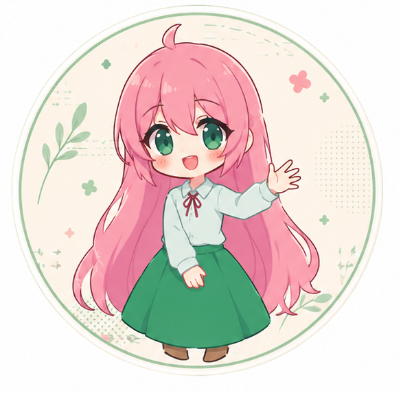
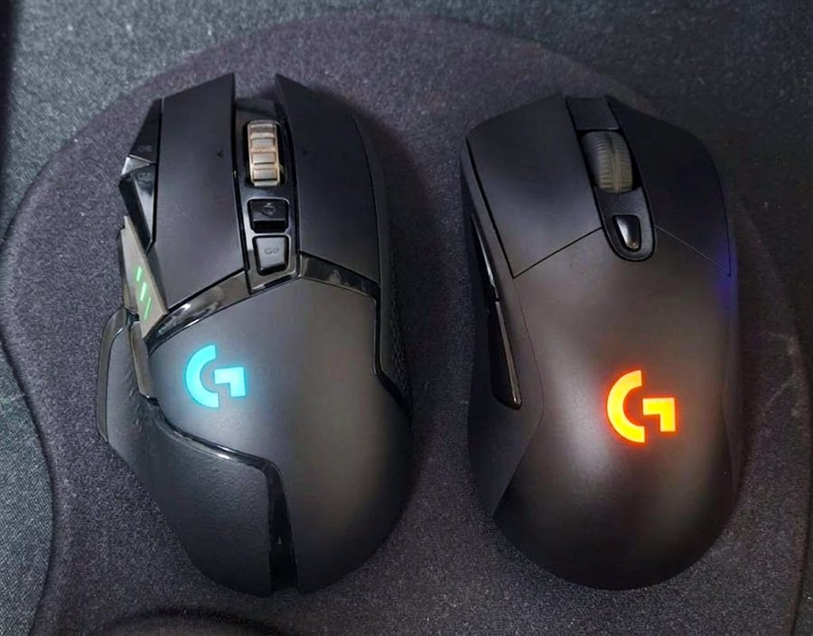

「1回しか押してないのにダブルクリックされる」あれ、マウスの寿命のサインかも。気になったのでブラウザだけで調べられるやつ作りました。登録もインストールもいりません。
もしこのツールが役に立ったら、お買い物のときにこのページのリンクから入ってもらえると、励みになります。応援ありがとうございます🙏
ざっくり言うと、マウスのスイッチ（クリックの中の小さい部品）がヘタって、1回しか押してないのに2回押したことになっちゃう故障です。クリックが勝手にダブルになる、ドラッグが途中で切れる、選択がすぐ外れる…って感じで出ます。長く使ったマウスや、安いスイッチのモデルで起きやすいです。
やってることは単純で、クリックとクリックの間隔をミリ秒で測ってるだけ。指じゃ絶対に押せない速さ（はじめは60ms以下）で連続クリックが入ったら「これは人間じゃない＝チャタリングかも」って数えます。ゆっくり押してるのに疑いが何回も出るなら、そろそろ寿命のサインです。
買い替えるなら私はロジクール派です。自分でも使ってて、丈夫さとメーカー保証2年で選んでます。ロジクールは大きく2種類あるので、用途で選ぶといいですよ。
G PRO・G502・G304 とか。反応が速くて軽い。新しめのモデルは光学式スイッチで物理接点が少なく、チャタリングが起きにくいのが強み。ゲームもするし、もう二度と同じ目に遭いたくない人向け。
MX Master・Signature M・ERGO とか。静音クリックで、手にやさしい形、複数のパソコン切り替えもできる。在宅やオフィスで静かに使いたい人向け。
正直に言うと、ロジクールも昔は一部のモデルでダブルクリックの口コミが多かったです。ただ最近の光学スイッチのモデルで良くなってるし、何より保証が2年あるので、早めに壊れても交換してもらいやすい。そこも込みで信頼してます。

スイッチの中にホコリが入ってるだけのこともあります。軽症なら接点復活剤やエアダスターで直る場合も。分解が必要なので自己責任で。
一瞬の連続クリックを無視してくれるソフトもあります。ただ根本解決じゃなく延命なので、仕事で使うなら買い替えが安心。
ゲーミングマウスは保証が1〜2年あることも。レシートやメーカー保証を見てみてください。
それは正常です。わざと速く2連打すれば当然引っかかります。1回ずつ、ゆっくり押して測ってくださいね。
20〜30回が目安。ゆっくり押してるのに疑いが何度も出る、特に割合が多いなら買い替えどきです。